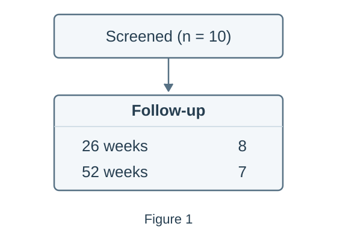
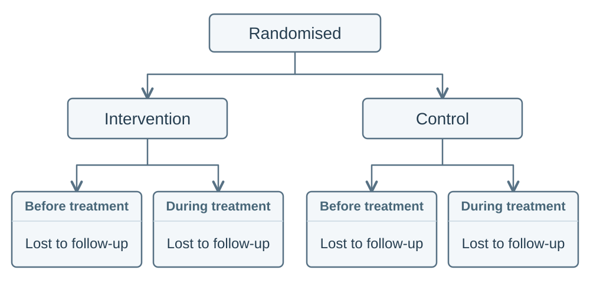

Parsing benchmark
The
ParsingBenchmark
is used to evaluate how well a parsing function has extracted node text, labels,
flow and additional text.
Input format
Suppose we have the following flowchart, example_0:

For this flowchart, the prediction and ground-truth files could have the following directory structure:
data/ground-truth/
├── nodes/
│ └── example_0.json
├── labels/
│ └── example_0.json
├── flow/
│ └── example_0.json
└── additional_texts/
└── example_0.json
results/predictions/
└── example_0.json
The filename stem, example_0, identifies the same flowchart in every
directory. Ground truth must contain all four parts, even when the predictions
contain only some parts.
Prediction files
Predictions use the JSON format saved by
parse_imgs(). The
prediction contains deliberate text and flow errors to demonstrate the benchmark
scores. results/predictions/example_0.json contains:
{
"nodes": [
{
"node_number": 1,
"text": "Screened (n = 11)",
"labels": [],
"points_to": [2, 3]
},
{
"node_number": 2,
"text": "8",
"labels": ["Follow-up", "26 week"],
"points_to": []
},
{
"node_number": 3,
"text": "7",
"labels": ["Follow-up", "52 weeks"],
"points_to": []
}
],
"additional_texts": ["Figure 2"]
}
Ground-truth files
Ground truth separates node text, labels, flow and additional text into four
files. Each file contains an options list, and each ground-truth option
describes one complete accepted interpretation.
The flowchart above can be correctly represented using the two possible options:
| Option index | Node-text file | Label file | Flow file | Additional-text file |
|---|---|---|---|---|
0 |
Screened node and one follow-up node containing 8\n7. |
Joined 26 weeks\n52 weeks label. |
1 → 2. |
Figure 1. |
1 |
Screened node and separate follow-up nodes containing 8 and 7. |
Separate 26 weeks and 52 weeks labels. |
1 → 2 → 3. |
Figure 1. |
Therefore the ground truth files are given by:
Node text: data/ground-truth/nodes/example_0.json
{
"options": [
{
"nodes": [
{ "node_number": 1, "text": "Screened (n = 10)" },
{ "node_number": 2, "text": "8\n7" }
]
},
{
"nodes": [
{ "node_number": 1, "text": "Screened (n = 10)" },
{ "node_number": 2, "text": "8" },
{ "node_number": 3, "text": "7" }
]
}
]
}
Labels: data/ground-truth/labels/example_0.json
{
"options": [
{
"nodes": [
{ "node_number": 1, "labels": [] },
{ "node_number": 2, "labels": ["Follow-up", "26 weeks\n52 weeks"] }
]
},
{
"nodes": [
{ "node_number": 1, "labels": [] },
{ "node_number": 2, "labels": ["Follow-up", "26 weeks"] },
{ "node_number": 3, "labels": ["Follow-up", "52 weeks"] }
]
}
]
}
Flow: data/ground-truth/flow/example_0.json
{
"options": [
{
"nodes": [
{ "node_number": 1, "points_to": [2] },
{ "node_number": 2, "points_to": [] }
]
},
{
"nodes": [
{ "node_number": 1, "points_to": [2] },
{ "node_number": 2, "points_to": [3] },
{ "node_number": 3, "points_to": [] }
]
}
]
}
Additional text: data/ground-truth/additional_texts/example_0.json
{
"options": [
{ "additional_texts": ["Figure 1"] },
{ "additional_texts": ["Figure 1"] }
]
}
The benchmark selects one ground-truth option for each prediction and uses that option for all text and flow scores. See how diagrams are matched for details on how the benchmark selects which option to use.
Create the benchmark
You can use
ParsingBenchmark
to evaluate the saved predictions:
from pathlib import Path
from flowde.benchmarks.parsing.parsing_bench import ParsingBenchmark
truth_dir = Path("data/ground-truth")
benchmark = ParsingBenchmark(
pred_diagrams_dir=Path("results/predictions"),
true_nodes_dir=truth_dir / "nodes",
true_labels_dir=truth_dir / "labels",
true_flow_dir=truth_dir / "flow",
true_additional_texts_dir=truth_dir / "additional_texts",
expected_num_diagrams=1,
)
The benchmark loads the prediction and ground-truth files and checks that the
files are valid. expected_num_diagrams counts flowcharts in the complete
ground-truth dataset. This example contains one flowchart with two accepted
Ground-Truth Options, so expected_num_diagrams=1.
By default, the benchmark uses
levenshtein_with_text_normalisation()
to count character edits after normalising Unicode, whitespace and selected
punctuation variants. You can choose a different
text distance function through distance_fn.
See the
ParsingBenchmark
API reference for full details of the parameters and validation rules.
Parsing benchmark results
After creating the benchmark object, you can calculate the scores through its methods:
| Method | Return type | Result |
|---|---|---|
benchmark.node_matches() |
list[NodeMatches] |
Matched and unmatched nodes, with node-text costs, for each flowchart. |
benchmark.node_matches_with_flow() |
list[NodeMatches] |
Node matches for each flowchart, requiring parsed flow so each result can calculate its flow_score. |
benchmark.node_and_label_matches() |
list[NodeMatches] |
Node matches and matched and unmatched labels, with label costs, for each flowchart. |
benchmark.additional_text_matches() |
list[TextListMatches] |
Matched and unmatched additional-text strings, with costs, for each flowchart. |
benchmark.diagram_matches() |
list[DiagramMatch] |
Combined node, label, flow and additional-text comparisons for each flowchart. |
benchmark.total_node_text_cost() |
float |
Total node-text cost across the evaluated flowcharts. |
benchmark.total_label_cost() |
float |
Total label cost across the evaluated flowcharts. |
benchmark.total_additional_text_cost() |
float |
Total additional-text cost across the evaluated flowcharts. |
benchmark.all_flow_scores() |
list[FlowScores] |
Flow scores for each flowchart, in filename-stem order. |
benchmark.all_flow_jaccard_scores() |
list[float] |
One flow Jaccard score per flowchart, in filename-stem order. |
benchmark.avg_flow_jaccard() |
float |
Mean flow Jaccard score across the evaluated flowcharts. |
Before calculating scores, Flowde matches predicted nodes to the ground-truth
nodes they represent. A Node Match can pair nodes with different node
numbers: predicted node 2 might represent ground-truth node 1. Flowde then
uses those matches to compare the node text, labels and connections. See
how diagrams are matched for the matching rules.
Text costs
For example, you can print the text costs:
print(benchmark.total_node_text_cost()) # 1
print(benchmark.total_label_cost()) # 1
print(benchmark.total_additional_text_cost()) # 1
With the default distance function, each cost counts the character insertions, deletions or substitutions needed to make the normalised prediction match the normalised ground-truth text. For the selected Ground-Truth Option 1, the example contains three text differences:
| Part | Ground truth | Prediction | Cost |
|---|---|---|---|
| Node text | Screened (n = 10) |
Screened (n = 11) |
1: replace the final 1 with 0. |
| Labels | 26 weeks |
26 week |
1: insert the missing s. |
| Additional text | Figure 1 |
Figure 2 |
1: replace 2 with 1. |
Each total includes matched and unmatched text across all evaluated flowcharts.
Flow scores
You can inspect the flow scores for the example flowchart:
score = benchmark.all_flow_scores()[0]
print(score.tp, score.fp, score.fn) # 1 1 1
print(score.precision) # 0.5
print(score.recall) # 0.5
print(score.f1) # 0.5
print(score.jaccard) # 0.3333333333333333
print(score.missing_edges) # {(2, 3)}
print(score.extra_edges) # {(1, 3)}
The selected ground-truth Option 1 has connections 1 → 2 and 2 → 3. The
prediction has connections 1 → 2 and 1 → 3. The benchmark therefore finds
one correct connection, one extra connection and one missing connection.
Each item returned by
all_flow_scores()
is a
FlowScores
object with:
| Attribute | Description | Value in this example |
|---|---|---|
tp |
Number of connections present in both the prediction and ground truth. | 1 |
fp |
Number of predicted connections absent from the ground truth. | 1 |
fn |
Number of ground-truth connections absent from the prediction. | 1 |
precision |
Proportion of predicted connections that are correct: TP / (TP + FP). |
0.5 |
recall |
Proportion of ground-truth connections found: TP / (TP + FN). |
0.5 |
f1 |
Harmonic mean of precision and recall. | 0.5 |
jaccard |
Correct connections divided by all distinct connections in either diagram: TP / (TP + FP + FN). |
1 / 3 |
missing_edges |
Ground-truth connections absent from the prediction. | {(2, 3)} |
extra_edges |
Predicted connections absent from the ground truth. | {(1, 3)} |
Connections are directed: 1 → 2 differs from 2 → 1. The reported connection
pairs use ground-truth node numbers after matching; connections involving
unmatched predicted nodes use generated identifiers.
For a dataset containing several flowcharts, you can also print the individual Jaccard scores and their mean:
print(benchmark.all_flow_jaccard_scores())
print(benchmark.avg_flow_jaccard())
avg_flow_jaccard()
gives each flowchart equal weight. For example, scores of 1.0 and 0.5 give a
mean of 0.75, regardless of how many connections each flowchart contains.
Individual matches
Flowde matches predicted nodes to ground-truth nodes using node-text costs, with mixed-integer linear programming (MILP) to resolve ties using available flow and labels. See How diagrams are matched for the matching rules.
You can use the benchmark's matching methods, such as
node_matches(),
to inspect which predicted nodes match which ground-truth nodes and compare
the text and cost of each node pair:
for matches in benchmark.node_matches():
print("Flowchart:", matches.parent_img_code)
print("Ground-truth option:", matches.true_diagram_option_idx)
for match in matches.matches:
print("Predicted node:", match.pred_node)
print("Ground-truth node:", match.true_node)
print("Node-text cost:", match.node_text_cost)
An unmatched predicted node has true_node=None; an unmatched ground-truth
node has pred_node=None.
Text distance functions
By default, the parsing benchmark uses
levenshtein_with_text_normalisation()
to calculate the cost of differences between ground-truth and predicted text.
You can use a different text metric by passing a custom cost function as
distance_fn to
ParsingBenchmark.
For example, this function returns 0 for identical text and 1 for different
text:
def exact_match_cost(*, true_text: str | None, pred_text: str | None) -> int:
return 0 if (true_text or "") == (pred_text or "") else 1
benchmark = ParsingBenchmark(
pred_diagrams_dir=Path("results/predictions"),
true_nodes_dir=truth_dir / "nodes",
true_labels_dir=truth_dir / "labels",
true_flow_dir=truth_dir / "flow",
true_additional_texts_dir=truth_dir / "additional_texts",
expected_num_diagrams=1,
distance_fn=exact_match_cost,
)
See the
DistanceFnProtocol
API reference for the full requirements for custom cost functions.
Benchmark separately parsed parts
When developing prompts, parsing parts separately can help improve parsing performance. You can benchmark the parts already parsed to evaluate each prompt without first parsing every part. For example, this benchmark evaluates separately parsed node text and labels:
benchmark = ParsingBenchmark(
pred_diagrams_dir=[
Path("results/parsing/node_text"),
Path("results/parsing/labels"),
],
true_nodes_dir=truth_dir / "nodes",
true_labels_dir=truth_dir / "labels",
true_flow_dir=truth_dir / "flow",
true_additional_texts_dir=truth_dir / "additional_texts",
expected_num_diagrams=1,
)
print("Node-text cost:", benchmark.total_node_text_cost())
print("Label cost:", benchmark.total_label_cost())
Predictions must include node text so Flowde can match predicted nodes to ground-truth nodes. The ground-truth files must still contain all four parts, even when you have parsed only some parts.
Some methods require additional parsed parts. To see which methods are available for the predictions in your current benchmark, use:
print(benchmark.capabilities.available_methods)
Missing predictions
By default, the prediction files must cover every ground-truth flowchart. You
can add allow_missing_pred_diagrams=True when creating the benchmark to
evaluate only flowcharts with predictions.
How diagrams are matched
ParsingBenchmark
matches predicted nodes to ground-truth nodes by their content, rather than
requiring node numbers to agree. For example, these diagrams describe the same
flow despite using different node numbers:
Ground truth: Node 1: Screened → Node 2: Included
Prediction: Node 2: Screened → Node 1: Included
ParsingBenchmark
matches predicted node 2 to ground-truth node 1, and predicted node 1
to ground-truth node 2. The predicted flow therefore matches the
ground-truth flow.
How nodes are matched within each ground-truth option
For each option in the ground-truth files,
ParsingBenchmark
chooses node matches in this order:
- Minimise the total node-text cost, including costs for unmatched nodes.
- Among matches with the same node-text cost, maximise flow similarity if flow was parsed.
- Among matches still tied, minimise label cost if labels were parsed.
For example, this flowchart contains four nodes with the text
Lost to follow-up, each labelled Before treatment or During treatment:

All four nodes have identical text. Flow distinguishes the loss nodes under
Intervention from the loss nodes under Control. Within each arm, both
loss nodes have the same incoming flow, so the labels distinguish
Before treatment from During treatment.
How a ground-truth option is selected
After matching nodes within each option,
ParsingBenchmark
selects the ground-truth option with the lowest total node-text cost. If options
have the same cost,
ParsingBenchmark
compares the tied options in this order:
- Highest flow Jaccard score, if flow was parsed.
- Lowest label cost, if labels were parsed.
- Lowest additional-text cost, if additional text was parsed.